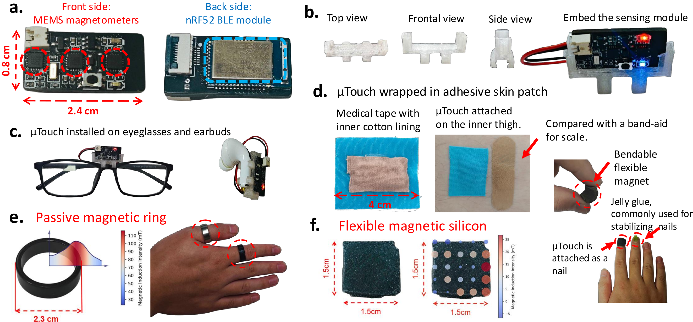
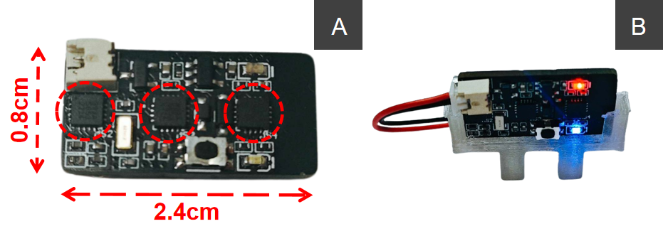
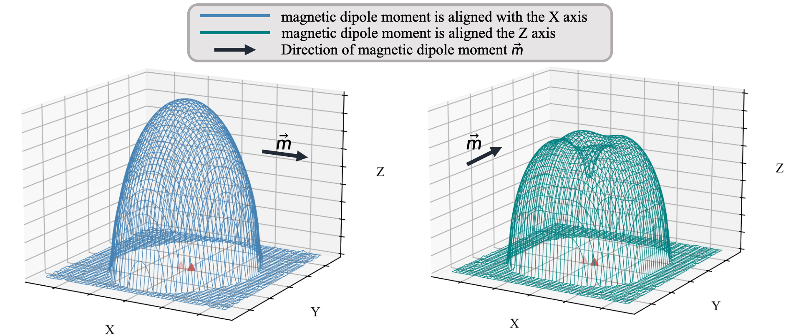
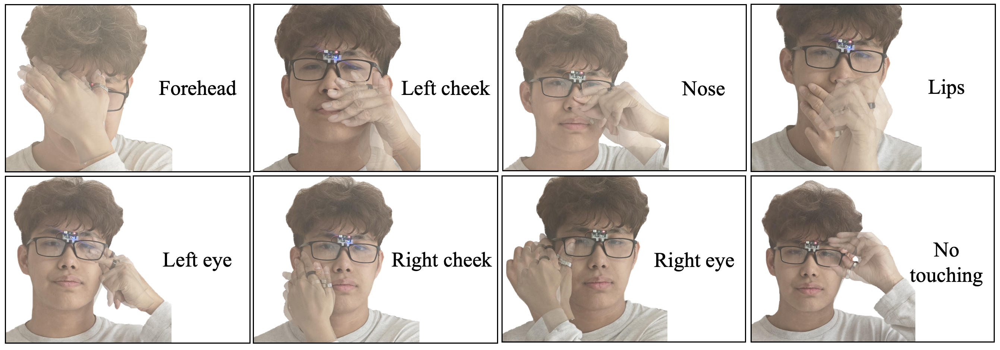
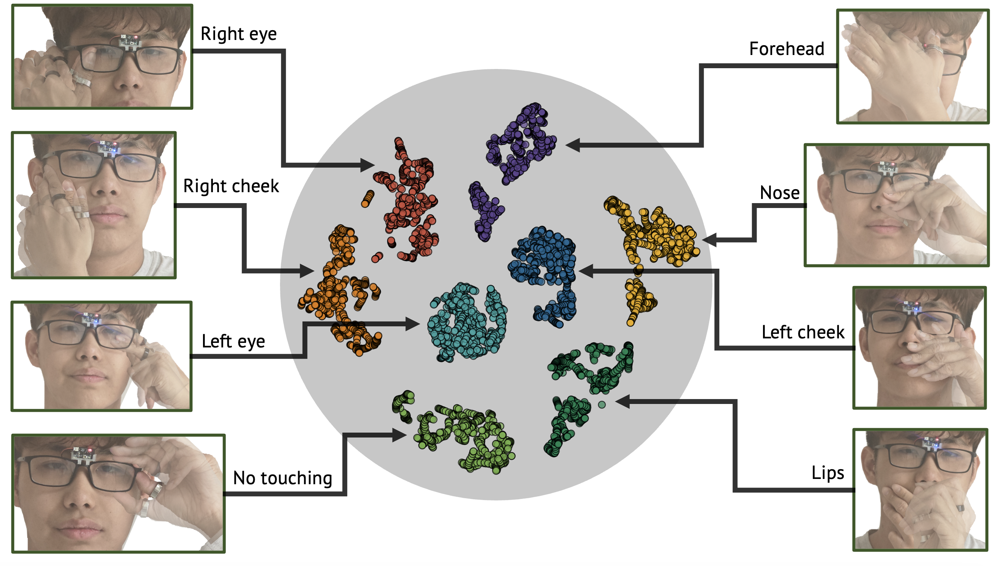
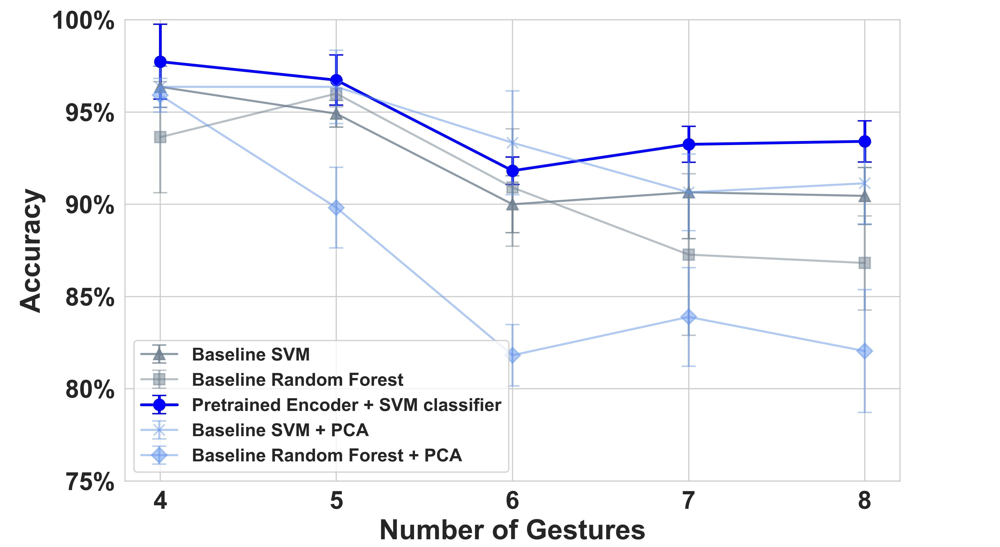
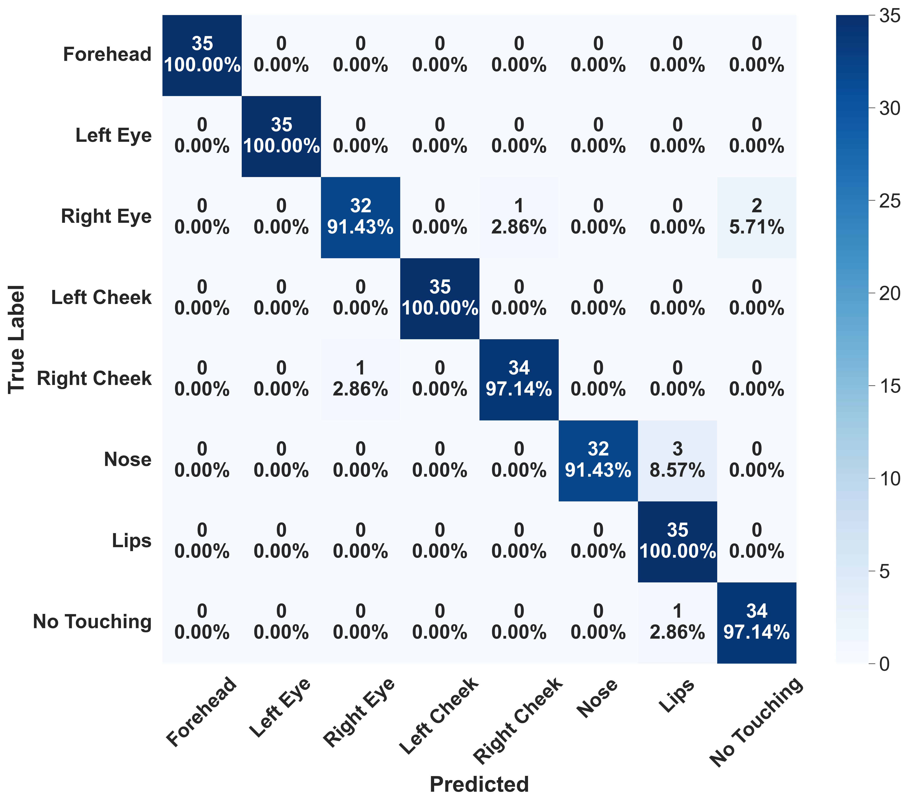

2.4 x 1.2 cm
Compact Hardware
Three low-power magnetometers in a miniaturized wearable sensing unit.
Self-touch gestures (e.g., nuanced facial touches and subtle finger scratches) provide rich insights into human behaviors, from hygiene practices to health monitoring. However, existing approaches fall short in detecting such micro gestures due to their diverse movement patterns.
We present muTouch, a magnetic sensing platform that combines a compact low-power hardware design, a lightweight semi-supervised pipeline requiring minimal user data, and an ambient field detection module for interference mitigation. In user studies, muTouch achieved 93.41% accuracy on eight-class face-touching detection and 94.63% on body-scratch detection, while requiring less than one minute of user fine-tuning.
2.4 x 1.2 cm
Three low-power magnetometers in a miniaturized wearable sensing unit.
< 1 minute
Three samples per gesture are sufficient for rapid user adaptation.
93.41% / 94.63%
Strong performance for both face-touching and body-scratch detection.

Full system hardware demonstration, including the sensing unit, holder, glasses/earbud mounting, and passive magnetic front-end form factors.

Simulation-guided hardware design selects a three-sensor layout, balancing sensing quality with small form factor for glasses, earbuds, and skin-mounted usage.

A training-free trigger estimates background field and detects nearby magnets, improving robustness under environmental magnetic bias.
11
Participants (Face-Touching)
12
Participants (Body-Scratch)
90.50%
Follow-up Accuracy (Face)
92.59%
Follow-up Accuracy (Scratch)




@misc{wang2026mutouchenablingaccuratelightweight,
title={{\mu}Touch: Enabling Accurate, Lightweight Self-Touch Sensing with Passive Magnets},
author={Siyuan Wang and Ke Li and Jingyuan Huang and Jike Wang and Cheng Zhang and Alanson Sample and Dongyao Chen},
year={2026},
eprint={2601.22864},
archivePrefix={arXiv},
primaryClass={cs.HC},
url={https://arxiv.org/abs/2601.22864}
}